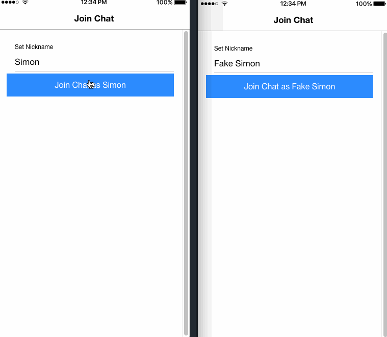

Lesson 12 Instructor Guide
Administrative Notes
Post an announcement for your students this week in I-learn.
Teaching Notes
Important topics to teach your students this week. These topics will come primarily from the reading and should contain information that will help them with their assignments.
Goals for the week
Encourage the students to continue with their project plan.
Students should be finishing up their projects. The final week should be reserved for cleanup of the already implemented code.
Teach the following concepts
- App deployment
- Testing Node.js Applications
- Node.js as a build Tool & Using npm
- Socket.io
Socket.io
What is Socket.io?
The following example shows what a Socket.io can accomplish:
In this example we see a two key characteristics of what socket.io can accomplish:
Real time event based communication
Bi-directional communication between browser and server

Socket.io allows for the browser/client to be updated without a refresh due to it's communication with the server
The server listens for changes to the client
Upon receiving a change it emits the event
This updates all clients associated with the server
In conclusion...
Socket.io allows for asyncronous communication
Clients do not need to refresh to view changes from a seperate client (i.e messages sent in a messaging application)
Prove 12
Overview:
Assure students understand socket.io and how it is implemented
Students will create a basic chat room application using socket.io
A template will be available to the students as a staring off point
Instructor Preparation
Assure students are actively working on their projects in accordance with their plans they created.
Encourage the students to maintain contact with the member of their team from WDD 330 to assure the team is on the same page.